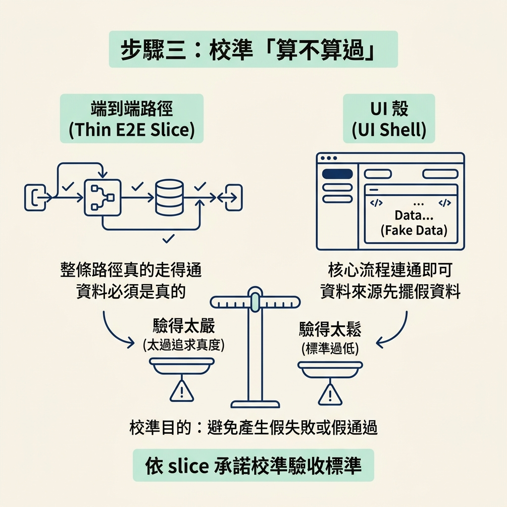
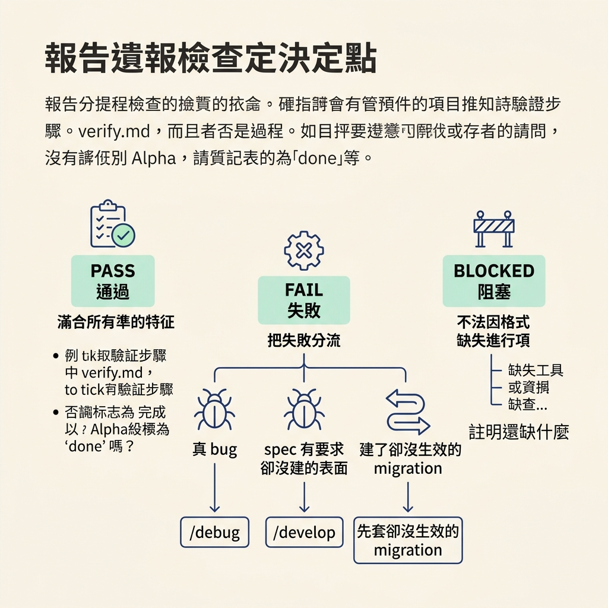

跑 check verify <feature>，讀懂驗證報告，並把失敗分流到 /debug 或 /develop。
上一節我們把 verify.md 合約、四種判定和「沒有證據就不打勾」這條鐵律看清楚。但光是看懂規則，跟真的把 App 跑起來、看著它一條條蓋章，是兩回事。這一節要把這條指令親自走一遍。
動手前先確認三件事。第一，你要驗的那個功能已經由 /develop 開發完，而且它的 spec 旁邊有 verify.md。第二，App 本身跑得起來——專案的啟動指令、環境變數（.env）都要齊。第三，如果你希望它驗得夠深，先把工具接上（browser MCP、database MCP 等）；第三點不是硬性，但少了它，很多條會直接掉進 blocked。
/check 底下有兩個模式，你可以直接指名 verify，也可以只敲 /check 讓它問你。指名時參數長這樣：
/check verify <feature>
如果只敲 /check 不帶參數，它刻意不猜，會停下來讓你選：
Which check do you want to run? Type one: • verify run the real app and prove the change works against its spec (usually right after /develop) • review a fresh model senior read of the diff, ranked findings (usually right before a PR) • both verify first, then review
這裡只走 verify。如果你把 feature 名字也帶上——例如 demo 裡的 check verify data model——它會直接鎖定那個功能，不再多問。模式要一次走完，不要在同一輪裡把 verify 和 review 混著跑。
它做的第一件事，是把 spec 的驗收條件讀進來，也就是上一節那份 verify.md checklist。/develop 已經把每個步驟綁到它要證明的 AC-N，所以你不用自己整理對應關係。demo 裡這個 spec 放在 specs/0003-data-model/，目錄裡有 index、rationale、verify 三個檔案，那份 verify 就是 /develop 產生的。
接著它會依這個 slice 當初承諾「要做到多真」來決定標準。一條薄薄的端到端路徑，要求的是整條路真的走得通；一個 UI shell，則允許資料來源先擺假資料。這一步是為了避免標準訂錯而產生假失敗或假通過：驗得太鬆會放過沒接好的線，驗得太嚴會把計畫上本來就允許的佔位當成缺陷。

然後它照專案自己的方式啟動 App，真的去操作：UI 就導覽、點擊、輸入、截圖；API 就送請求、記下 status 與 body；CLI 或背景工作就執行它、收集 stdout 與 stderr；資料層就對 live schema 跑查詢。它一邊跑，一邊維護一份「證據台帳」——每一條行為都要對應到當下留下來的證據，之後在報告裡被引用：
| Behavior kind | The evidence to record | |---|---| | UI | the URL you loaded, the screenshot path you saved, and what you saw rendered | | API | the exact request line, the HTTP status, and the key fields of the body | | CLI / job | the exact command, its exit code, and the stdout/stderr excerpt | | Data layer | the query you ran against the live schema, and its result |
這張表的重點是：沒有被記錄下來的行為，就算你再有把握，也不算驗過。所以它寧可把整個操作過程留成證據，也不要只留一句結論。
報告的基本形狀是固定的。領頭是這個功能的三種總判定之一，接著只列出沒過或還欠的條目，其餘細節留給 verify.md 自己：
## /check verify <feature> · <PASS | FAIL | BLOCKED> **<PASS: all N behaviors met, every specced surface built · FAIL: M of N failed · BLOCKED: K couldn't be exercised>.** (never PASS or ✅ if you did not actually run the app; say "not started") Next (this feature's next unticked box in the scope): PASS → `/test <feature>` if a `Test it` box remains, else the next feature · FAIL → `/debug <feature>` · missing surface → `/develop <feature>` · BLOCKED → what's needed to run it Failing / owed (omit if PASS): - <behavior or AC-N>: <what went wrong + evidence path> → <run /debug | build it, specced but missing | apply the migration, built but not live>
讀的時候先看總判定。PASS 的門檻是：每一條行為都能引用這次真的跑出來的證據，而且（有合約時）每一條 AC-N 都 met、每一個 spec 點名的表面都存在。只要有一個沒過，總判定就是 FAIL；如果連 App 都沒真的跑起來、或關鍵工具缺失，就是 BLOCKED。三種都不是「差不多可以了」，而是三種不同的下一步。
分流規則就寫在報告的 Next 那行：真 bug 送 /debug，spec 有要求卻沒建的表面送 /develop，建了卻沒生效的 migration 就先把它套用起來。PASS 之後才會去動 scope：它會把這個功能在 verify.md 裡實際跑過且通過的步驟打勾，並把 scope 的 Verify it 打勾。如果這個功能的這一格已經是最後一格（Alpha tier），它會問你「驗過也過了，要不要標成 done」，但不會替你決定。

demo 裡有兩次實際的操作。第一次是 check verify data model，結果是 FAIL：一條 spec 檢查沒照文件跑、七條 smoke test 斷言中有一條失敗，其餘每一條都是對照真 Supabase 資料庫拿到的證據，最後建議用 debug data model 修掉那兩個問題，再重跑驗證。
第二次是 check verify core review loop。這次它動用了 Supabase 的 MCP 直接和資料庫對話、跑 lint、build、用 curl 改 cookie 去測 signup 流程，還執行了 SQL 查詢。結果十五條行為裡九條 met、一條確認是真 bug、三條因為沒有 browser 工具而 blocked、一條要 Vercel 部署才跑得動。那條真 bug 追下去，就是先前為了本機測試把 http://localhost:3000 放進來的那個改動，程式碼改一下就好。
兩次都指向同一件事：它真的在拿證據找 bug，不是幫你蓋章。而且 demo 也提醒了一件事——如果你選的是 prototype tier，scope 上根本沒有格子可以打勾，但你還是可以手動替某個功能跑驗證；驗證的強度，等於它手上工具能觸及的範圍。
跑一次驗證的順序是：決定模式（/check verify <feature>）、載入verify.md合約、依 slice 承諾校準標準、用專案自己的方式把 App 跑起來、實際操作每個行為並留下證據、逐條判定，最後輸出 PASS／FAIL／BLOCKED。讀報告先看總判定，再看沒過的條目與它引用的證據：真 bug 給/debug，沒建的表面給/develop，沒套用的 migration 先套用。PASS 之後，才算把這個功能在 scope 上的Verify it完成。
驗證證明了功能「今天」能跑，但它描述的也只是今天。下一節要看 test 這個 skill 掃哪些東西：它怎麼只鎖定這條 branch 上還沒 commit 的變更、怎麼依檔案類型挑測試策略，以及怎麼把耐久條件追回到 AC-N。